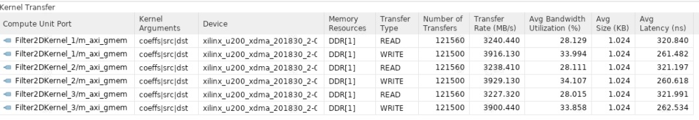
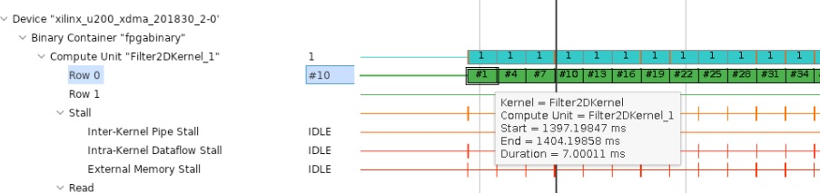
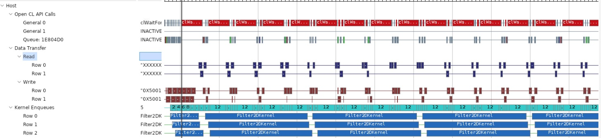

Vitis Hardware AccelerationSee Vitis™ Development Environment on xilinx.com |
Building the 2-D Convolution Kernel and Host Application¶
This lab will focus on building a hardware kernel using the Vitis application acceleration development flow, targeting the Xilinx Alveo U200 accelerator card. A host-side application will be implemented to coordinate all the data movements and execution triggers for invoking the kernel. During this lab, real performance measurements will be taken and compared to estimated performance and the CPU-only performance.
Host Application¶
This section briefly discusses how the host application is written to orchestrate the execution of a convolution kernel. It was estimated in the previous lab that multiple compute units will be needed to meet the 60 FPS performance target for processing 1080p HD Video. The host application is designed to be agnostic to the number of compute units. More specifically, if the compute units are symmetric ( instance of the same kernel and memory connectivity to device DDR banks is identical), the host application can deal with any number of compute units.
TIP: Additional tutorials and examples about host programming and Vitis tools are available.
Host Application Variants¶
Please go to the top-level folder for the convolution tutorial and change the directory to src, and list the files:
cd $CONV_TUTORIAL_DIR/src
ls
There are two files namely “host.cpp” and “host_randomized.cpp”. They can be used to build two different versions of the host application. The way they interact with the kernel compute unit is exactly the same except that one uses the pgm image file as input. This file is repeated multiple times to emulate an image sequence(video). The randomized host uses a randomly generated image sequence. The host with random input image generation has no dependencies. In contrast, the host code in “host.cpp” uses OpenCV libraries, specifically using OpenCV 2.4 libraries to load, unload and convert between raw image formats.
Host Application Details¶
The host application starts by parsing command line arguments. Following are the command-line options provided by the host that takes the input image and uses OpenCV (in source file src/host.cpp):
CmdLineParser parser;
parser.addSwitch("--nruns", "-n", "Number of times the image is processed", "1");
parser.addSwitch("--fpga", "-x", "FPGA binary (xclbin) file to use");
parser.addSwitch("--input", "-i", "Input image file");
parser.addSwitch("--filter", "-f", "Filter type (0-6)", "0");
parser.addSwitch("--maxreqs", "-r", "Maximum number of outstanding requests", "3");
parser.addSwitch("--compare", "-c", "Compare FPGA and SW performance", "false", true);
The host_randomized.cpp file has all those options, and adds width and height options:
parser.addSwitch("--width", "-w", "Image width", "1920");
parser.addSwitch("--height", "-h", "Image height", "1080");
Different options can be used to launch the application and for performance measurements. In this lab, you will set most of these command-line inputs to the application using a makefile, make_options.mk in the top-level directory. This file lets you set most of these options.
After parsing the command-line options, the host application creates an OpenCL context, reads and loads the .xclbin, and creates a command queue with out-of-order execution and profiling enabled. After that, memory allocation is done, and the input image is read (or randomly generated).
After the setup is complete, the application creates a Filter2DDispatcher object and uses it to dispatch filtering requests on several images. Timers are used to capture execution time measurements for both software and hardware execution. Finally, the host application prints the summary of performance results. Most of the heavy lifting is done by Filter2DDispatcher and Filter2DRequest. These classes manage and coordinate the execution of filtering operations on multiple compute units. Both versions of the host application are based on these classes.
2D Filtering Requests¶
The Filter2DRequest class is used by the filtering request dispatcher class. An object of this class encapsulates a single request to process a single color channel (YUV) for a given image. It essentially allocates and holds handles to OpenCL resources needed for enqueueing 2-D convolution filtering requests. These resources include OpenCL buffers, event lists, and handles to kernel and command queue. The application creates a single command queue that is passed down to enqueue every kernel enqueue command.
After an object of the Filter2DRequest class is created, it can be used to make a call to the Filter2D method. This call will enqueue all the operations, moving input data or filter coefficients, kernel calls, and reading of output data back to the host. The same API call will create a list of dependencies between these transfers and also creates an output event that signals the completion of output data transfer to the host.
2D Filter Dispatcher¶
The Filter2DDispatcher class is the top-level class that provides an end-user API to schedule kernel calls. Every call schedules a kernel enqueue and related data transfers using the Filter2DRequest object, as explained previously. The Filter2DDispatcher is a container class that essentially holds a vector of request objects. The number of Filter2DRequest objects that are instantiated is defined as the max parameter for the dispatcher class at construction time. This parameter’s minimum value can be as small as the number of compute units to allow at least one kernel enqueue call per compute unit to happen in parallel. But a larger value is desired since it will allow overlap between input and output data transfers happening between host and device.
Building the Application¶
The host application can be built using the Makefile that is provided with the tutorial. As mentioned earlier, the host application has two versions: the first version takes input images to process, the second can generate random data that will be processed as images.
The top-level Makefile includes a file called make_options.mk. This file provides most of the options that can be used to generate different host builds and kernel versions for emulation modes. It also provides a way to launch emulation with a specific number of test images. The details of the options provided by this file are as follows:
Kernel Build Options¶
TARGET: selects build target; the choices are
hw,sw_emu,hw_emu.PLATFORM: target Xilinx platform used for the build
ENABLE_STALL_TRACE : enables the kernel to generate stall data. Choices are:
yes,no.TRACE_DDR: select the memory bank to store trace data. Choices are DDR[0]-DDR[3] for u200 card.
KERNEL_CONFIG_FILE: kernel configuration file
VPP_TEMP_DIRS: temporary log directory for the Vitis kernel compiler (
v++)VPP_LOG_DIRS: log directory for
v++.USE_PRE_BUILT_XCLBIN: enables the use of pre-built FPGA binary file to speed the use of this tutorial
Host Build Options¶
ENABLE_PROF: Enables OpenCL profiling for the host application
OPENCV_INCLUDE: OpenCV include directory path
OPENCV_LIB: OpenCV lib directory path
Application Runtime Options¶
FILTER_TYPE: selects between 6 different filter types: choices are 0-6(Identity, Blur, Motion Blur, Edges, Sharpen, Gaussian, Emboss)
PARALLEL_ENQ_REQS: application command-line argument for parallel enqueued requests
NUM_IMAGES: number of images to process
IMAGE_WIDTH: image width to use
IMAGE_HEIGHT: image height to use
INPUT_TYPE: selects between host versions
INPUT_IMAGE: path and name of image file
PROFILE_ALL_IMAGES: while comparing CPU vs. FPGA, use all images or not
NUM_IMAGES_SW_EMU: sets no. of images to use for sw_emu
NUM_IMAGES_HW_EMU: sets no. of images to use for hw_emu
To build the host application with randomized data please follow these steps:
Edit the Makefile options:
cd $CONV_TUTORIAL_DIR/
vim make_options.mk
Make sure INPUT_TYPE option is set to
random. This will build thehost_randomized.cppapplication:
############## Host Application Options
INPUT_TYPE :=random
TIP: To build the host.cpp you must include the following two variables that point to OpenCV 2.4 install path in make_options.mk file:
############## OpenCV Installation Paths
OPENCV_INCLUDE :=/**OpenCV2.4 User Install Path**/include
OPENCV_LIB :=/**OpenCV2.4 User Install Path**/lib
Source the install specific scripts for setting up the Vitis application acceleration development flow and the Xilinx RunTime Library:
source /**User XRT Install Path**/setup.sh
source /**User Vitis Install Path**/settings64.sh
After setting the appropriate paths, build the host application using the makefile command as follows:
make host
It will build host.exe inside a build folder. By building the host application separate from the kernel code, you can make sure the host code compiles correctly and all library paths have been set.
Running Software Emulation¶
To build and run the kernel in software emulation mode, please run the following bash command:
make run TARGET=sw_emu
It will build an xclbin file to be used in software emulation mode only and launch an emulation run. Once the emulation finishes, you should get a console output similar to the one below. The output given below is for random input image case:
----------------------------------------------------------------------------
Xilinx 2D Filter Example Application (Randomized Input Version)
FPGA binary : ./fpgabinary.sw_emu.xclbin
Number of runs : 1
Image width : 1920
Image height : 1080
Filter type : 5
Max requests : 12
Compare perf. : 1
Programming FPGA device
Generating a random 1920x1080 input image
Running FPGA accelerator on 1 images
finished Filter2DRequest
finished Filter2DRequest
finished Filter2DRequest
Running Software version
Comparing results
Test PASSED: Output matches reference
----------------------------------------------------------------------------
If the input image is to be used for processing, please set OpenCV paths and INPUT_TYPE as an empty string in make_options.mk file and run it again. Following is the expected console output:
----------------------------------------------------------------------------
Xilinx 2D Filter Example Application
FPGA binary : ./fpgabinary.sw_emu.xclbin
Input image : ../test_images/picadilly_1080p.bmp
Number of runs : 1
Filter type : 3
Max requests : 12
Compare perf. : 1
Programming FPGA device
Running FPGA accelerator on 1 images
finished Filter2DRequest
finished Filter2DRequest
finished Filter2DRequest
Running Software version
Comparing results
Test PASSED: Output matches reference
----------------------------------------------------------------------------
The input and the output images are shown below for filter type selection set to 3 which performs edge detection:
Running Hardware Emulation¶
The application can be run in hardware emulation mode in a similar way as software emulation. The only change needed is TARGET, which should be set to hw_emu.
NOTE: Hardware Emulation may take a long time. The Makefile default setting will make sure it simulates only a single image, but it is recommended in case of the random input image that image size be set smaller by keeping image height in the range of 30-100 pixels. The height and width of the image can be specified in the make_options.mk file.
Launch hardware emulation using the following command:
make run TARGET=hw_emu
It will build the hardware kernel in emulation mode and then launch the host application. The output printed in the console window will be similar to the sw_emu case. But after hardware emulation, you can analyze different synthesis reports and view different waveforms using Vitis Analyzer.
System Run¶
In this section, you will run the host application using FPGA hardware and analyze the overall system’s performance using Vitis Analyzer and host application console output.
Building the Hardware xclbin¶
Once the kernel functionality is verified, and its resource usage is satisfactory, the hardware kernel build process can be started. The kernel build process will create an xclbin file targetting the actual accelerator card. It is an FPGA executable file that can be read and loaded by the host onto the FPGA card. Building xclbin takes a few hours, and is built as shown below:
You can enable the performance profiling by setting “ENABLE_PROF?=yes” in
make_options.mkfile as shown below:
ENABLE_PROF?=yes
Launch the hardware run using the following comand:
make build TARGET=hw
TIP: You can use a prebuilt xclbin file if one is available by setting USE_PRE_BUILT_XCLBIN := 1 in the
make_options.mkfile.
Application Run Using FPGA Kernel¶
To run the application, please proceed as follows:
make run TARGET=hw
It should produce a console log similar to the one shown below:
----------------------------------------------------------------------------
Xilinx 2D Filter Example Application (Randomized Input Version)
FPGA binary : ../xclbin/fpgabinary.hw.xclbin
Number of runs : 60
Image width : 1920
Image height : 1080
Filter type : 3
Max requests : 12
Compare perf. : 1
Programming FPGA device
Generating a random 1920x1080 input image
Running FPGA accelerator on 60 images
Running Software version
Comparing results
Test PASSED: Output matches reference
FPGA Time : 0.4240 s
FPGA Throughput : 839.4765 MB/s
CPU Time : 28.9083 s
CPU Throughput : 12.3133 MB/s
FPGA Speedup : 68.1764 x
----------------------------------------------------------------------------
From the console output, it is clear that acceleration achieved when compared to CPU is 68x. The achieved throughput is 839 MB/s, which is close to the estimated throughput of 900 MB/s; it only differs by 6.66 percent.
Profile Summary¶
This section will analyze the system performance using Vitis Analyzer by looking at different performance parameters and traces.
When the application is run, whether in emulation mode or on actual hardware, a trace file of runtime activities can be generated. This trace file can be viewed within Vitis Analyzer. For additional details, refer to Using Vitis Analyzer.
The trace information generated during the application run can be controlled by specifying different options inside the xrt.ini file placed in the same directory as the host application. Refer to xrt.ini File for more information. You can examine the xrt.ini file used for this exercise, which is found in this tutorial’s top-level folder.
After the design has been run; you can open the run time profile summary report using the following steps:
vitis_analyzer ./build/fpgabinary.xclbin.run_summary
After the Vitis Analyzer tool opens, select Profile Summary from the left-side menu, and then select Compute Unit Utilization from the window displayed on the right-hand side.
The report will display stats about the measured performance of the compute units. You have built the
.xclbinwith three compute units, so the display will appear as shown below:
From this table, it can be seen that the kernel compute time as displayed in the Avg Time column is about 7 ms, almost equal to the estimated kernel latency in the previous lab.
Another important measurement is the CU Utilization column, which is very close to 100 percent. This means the host was able to feed data to compute units through PCIe continuously. In other words, the host PICe bandwidth was sufficient, and compute units never saturated it. This can also be observed by examining the host bandwidth utilization. To see this, select Host Data Transfers in the report, and a table similar to the figure below will be displayed. From this table, it is clear that the host bandwidth is not fully utilized.

Similarly, by selecting Kernel Data Transfers in the report, you can see how much bandwidth is utilized between the kernel and the device DDR memory. You have used a single memory bank (DDR[1]) for all the compute units, as shown below.

Application Timeline¶
The Application Timeline can also be used to examine performance parameters like CU latency per invocation and bandwidth utilization.
Select Application Timeline from the left-side menu.
This will display the Application Timeline in the right side window, as shown below.

Zoom appropriately and go to device-side trace. For any CU, hover your mouse on any transaction in “Row 0” and a tooltip will show compute start and end times and also the latency. This should be similar to what you saw in the last section.
Another important thing to observe is the host data transfer trace as shown below. From this report, it can be seen that the host read and write bandwidth is not fully utilized as there are gaps, showing times when there are no read/write transactions occurring. You can see that these gaps are significant, highlighting the fact that only a fraction of host PCIe bandwidth is utilized.

From this discussion, and knowing that the Alveo U200 accelerator card has multiple DDR banks, it should be clear that you can improve the application’s overall throughput even further. You can use additional compute units that can accelerate a single video stream to increase throughput or can be used to process multiple video streams at the same time.
In this lab, you have learned:
How to build, run and analyze the performance of a video filter
How to write an optimized host-side application for multi CU designs
How to estimate kernel performance and compare it with measured performance
Conclusion¶
Congratulations! You have successfully completed the tutorial. In this tutorial, you have learned how to estimate the performance and acceleration requirements for the hardware implementation of a Vitis Kernel. You have analyzed kernel performance using different tools and compared measured and estimated performance, to see how close both performance number are. You have also seen that you can create an optimized memory cache or hierarchy for FPGA based implementation easily that significantly boost application performance. Finally you have learnt how to write optimized host code to get best performance out of multiple CUs for a given kernel.
Copyright© 2021 Xilinx